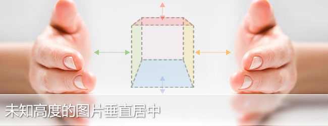
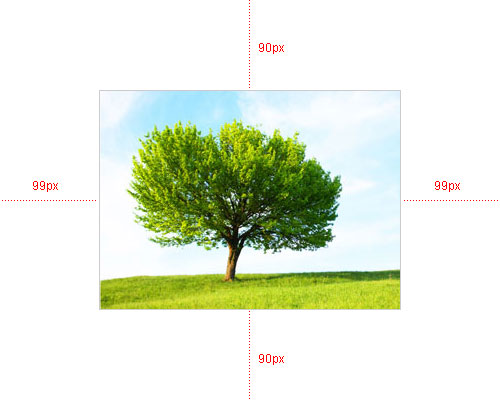

图片的宽度和高度是未知的，没有固定的尺寸，在这个前提下要使图片在一个固定了宽度和高度的容器中垂直居中。网上收集一些常用的方法整理了一下。
下图是理想中的效果图，外部容器的宽度和高度固定，中间的图片宽度和高度未知，但是图片要始终要相对于外部的容器垂直居中。

但是实际在浏览器中实现起来的效果并不是很完美，由于各浏览器的解析都各不相同，所以在各浏览器都会有1px-3px的偏差。
方法一：
该方法是将外部容器的显示模式设置成display:table，img标签外部再嵌套一个span标签，并设置span的显示模式为 display:table-cell，这样就可以很方便的使用vertical-align象表格元素那样对齐了，当然这只是在标准浏览器 下，IE6/IE7还得使用定位。

HTML结构部分：
CSS样式部分：
方法二：
方法二和方法一的实现的原理大同小异，结构也是相同的，方法一用的是条件注释，方法二就用的CSS Hack。
CSS样式部分：
该方法有个弊端，在标准浏览器下由于外部容器#box的显示模式为display:table-cell，所以导致#box无法使用margin属性，并且在IE8下设置边框也无效。
方法三：
标准浏览器还是将外部容器#box的显示模式设置为display:table-cell，IE6/IE7是利用在img标签的前面插入一对空标签的办法。
HTML结构部分：
CSS样式部分：
方法四：
在img标签外包裹一个p标签，标准浏览器利用p标签的伪类属性:before来实现，IE6/IE7使用了CSS表达式来实现兼容。
HTML结构部分：
CSS样式部分：
使用:beforr这个方法对于标准浏览器来说比较给力，也没发现有副作用，但是对于IE6/IE7，如果对性能要求较高的话CSS表达式的方法要慎用。
方法五：
该方法针对IE6/IE7，将图片外部容器的字体大小设置成高度的0.873倍就可以实现居中，标准浏览器还是使用上面的方法来实现兼容，并且结构也是比较优雅。
HTML结构部分：
CSS样式部分：
设置字体大小的方法感觉比较怪异，也没有看到一个合理的解释，只知道图片元素有一些不同于其他元素的特性，但是对于IE6/IE7来说，这个方法还是比较给力的。